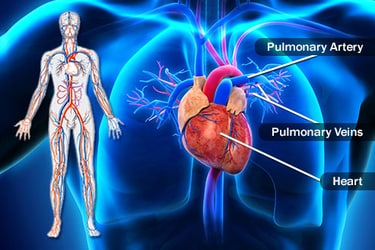

|  | ||
| These include the great cardiac vein, the middle cardiac vein, the small cardiac vein, the smallest cardiac veins, and the anterior cardiac veins. Coronary veins carry blood with a poor level of oxygen,
from the myocardium to the right atrium. The inferior vena cava (or caudal vena cava in some animals) travels up alongside the abdominal aorta with blood from the lower part of the body. It is the largest vein in the human body. | The condition was first described in Japan. The name Takotsubo is a Japanese word, meaning “a pot used for trapping octopus”. It refers to the shape of the heart in people with this condition (as shown on the bottom left section of the image above).
Also known as stress cardiomyopathy and colloquially as broken-heart syndrome, Takotsubo cardiomyopathy is a condition that results in a sudden weakness of heart muscle. This can be triggered by significant emotional stress,
hence the name broken-heart syndrome. It can cause chest pain and breathlessness, similar to a heart attack but the condition is temporary and reversible. | Leg muscles,
joints and nerves work together to bear your body weight and allow you to move your body. When injury or disease affects any of these structures.eripheral artery disease - legs
Abnormal cholesterol. Diabetes. Heart disease (coronary artery disease) High blood pressure (hypertension) Kidney disease involving hemodialysis. Smoking. Stroke (cerebrovascular diseases) |